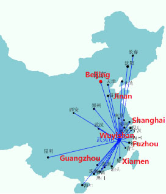
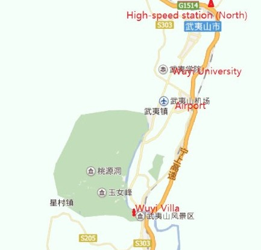
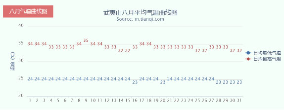

Symposium place
Dawangge international conference hall
Qingchuan building conference hall
Accommodation
All participants will stay at the Wuyi Villa. Hotel for all China, Japan and Korea guests will be booked by CJK organizer. The detailed hotel information needs to be sent by e-mail.
If you want to know much about the hotel, you can visit the website: http://www.513villa.com/index.asp
Transportation
Wuyishan is located in the northwest of Fujian province, You can get there from Beijing, or Shanghai hongqiao by air or high speed train, either you can change from Guangzhou or Qingdao and other cities.
The flights you can choose to Wuyishan(just look at the table)：
Main flights to Wuyishan
| Departure | Flight Details | Time |
|---|---|---|
| Qingdao Liuting International Airport | Air China CA4711 Shandong Airlines SC4711 |
06:35-08:50 |
| Qingdao Liuting International Airport | Air China CA4711 | 07:00-09:15 |
| Beijing Capital International Airport | Southern Airlines CZ5074 Xiamen Airlines MF8122 |
06:40-09:10 |
| Xiamen Gaoqi International Airport | Air China CA4879 Shandong Airlines SC4879 |
07:55 -09:00 |
| Shanghai Hongqiao International Airport | Southern Airlines CZ9409 Eastern Airlines MU5535 |
10:00-11:25 |
| Guangzhou Baiyun International Airport | Air China CA4712 Shandong Airlines SC4712 |
12:50 -14:10 |
| Xiamen Gaoqi International Airport | Southern Airlines CZ5049 Xiamen Airlines MF8081 |
13:45 -14:40 |
| Xiamen Gaoqi International Airport | Xiamen Airlines MF8081 | 14:00-14:50 |
| Xiamen Gaoqi International Airport | Xiamen Airlines MF8081 | 20:10 -21:05 |

Map of Wuyishan city

Even temperature in August

If you want to know about Wuyishan’s scenery and its culture, you can browse the web: http://www.wyschina.com/index.html.
Also welcome to visit Wuyi University’ website: http://211.80.240.15/jg/wsb/index.html.